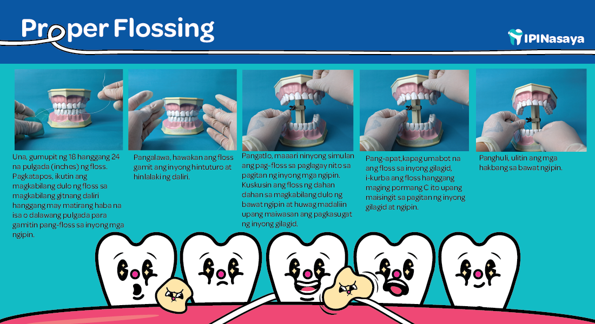
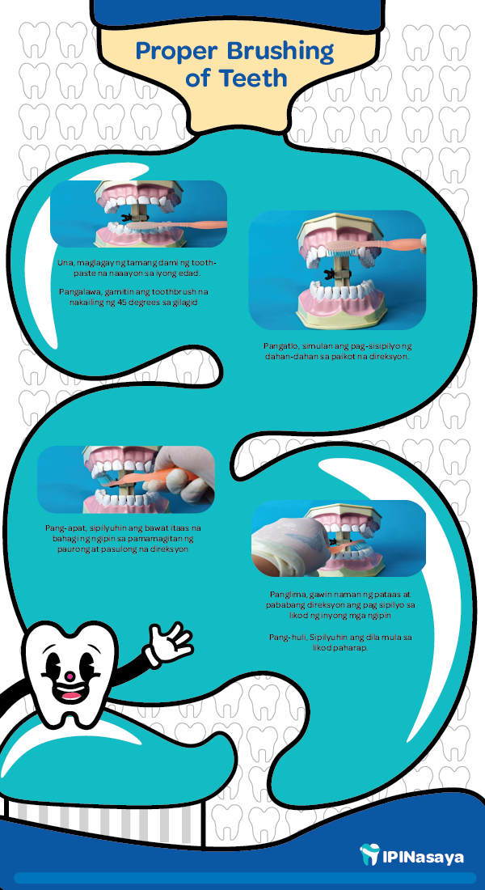

Ano ang mga tamang paraan sa pag-alaga ng dental health?
 References:
American Dental Association. (n.d.). Brushing your teeth. MouthHealthy. [see link]
How to practice good oral hygiene. FDI. (n.d.). [see link]
Lindberg, S. (2021, February 17). Benefits of flossing your teeth: 5 reasons to Floss regularly. Healthline. [see link]
Panoorin ang video sa ibaba upang makita ninyo ang bawat hakbang sa pangangalaga ng mga ngipin!
Date: October 07, 2023
Ang educational video na ito ay nagpapakita ng tamang paraan kung paano mag-floss at sipilyo.